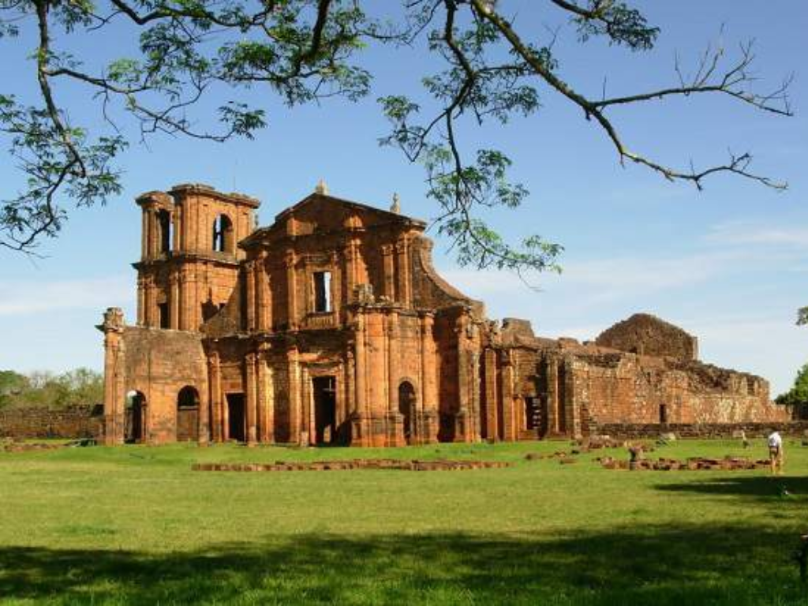

O Rio Grande do Sul é o estado mais ao sul do Brasil, localizado na região Sul, conhecido por sua forte identidade cultural e tradições marcantes, influenciadas por povos indígenas, portugueses e imigrantes europeus. Sua paisagem é bastante diversa, incluindo campos, serras e áreas litorâneas, com destaque para a Serra Gaúcha, famosa pelo clima mais frio e pela produção de vinhos. A cultura gaúcha é um dos principais símbolos do estado, com tradições como o chimarrão, o churrasco e as danças típicas. Sua capital, Porto Alegre, é um importante centro político, econômico e cultural, reunindo história, vida urbana e forte participação social, refletindo o espírito orgulhoso e acolhedor do povo gaúcho.
